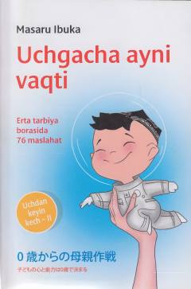

UAGo'daklarni erta yoshdan to'g'ri tarbiyalash va rivojlantirish sirlari.
Mazkur kitobda go'daklarni erta yoshdan rivojlantirish, ularning shaxsiyati va qobiliyatlarini shakllantirishda ota-onalarning o'rni haqida so'z boradi. Muallif bolalar tarbiyasida uch yoshgacha bo'lgan davrning naqadar muhimligini hayotiy misollar va ilmiy yondashuvlar asosida tushuntirib beradi.